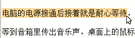
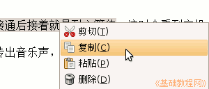
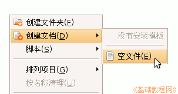
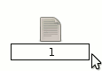
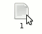
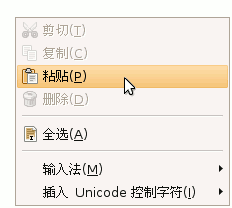
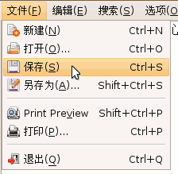

电脑操作基础
作者：TeliuTe 来源：基础教程网
十二、新建空白文档 返回目录 下一课当有时候我们在网页里复制了一段文字，可以暂时保存在一个文本文档里，下面我们来看一个练习；
1、复制文字
1）打开一个网页和一个文档，在里面用拖动选择的方法，选中一段文字；
2）瞄准选中的那儿，点鼠标右键，选择“复制”命令；

2、新建空白文档
1）打开自己的主文件夹，或者打开其他文件夹，找个空白地方点右键，选“创建文档－空文件”命令；

2）这时出来一个新建的文件，按一下键盘数字1，把文件名改成１，也可以改成其他文件名；
；
文本文档的文件，可以加上扩展名.txt，不加这个扩展名Ubuntu里面也可以自动识别；
3）输完后按一下回车键，文件自动排列到前面去，找到以后双击打开它；

4）在打开的空白文档窗口里点右键，选择“粘贴”命令，把前面复制的文字粘贴进来；
；
5）点菜单“文件－保存”命令，保存一下文件，然后就可以关闭它了，也可以继续复制粘贴其他文本；

本节学习了在Ubuntu中新建空白文档的基本操作，如果你成功地完成了练习，请继续学习下一课内容；本教程由86团学校TeliuTe制作|著作权所有
基础教程网：http://teliute.org/
美丽的校园……
转载和引用本站内容，请保留版权信息和本站链接。